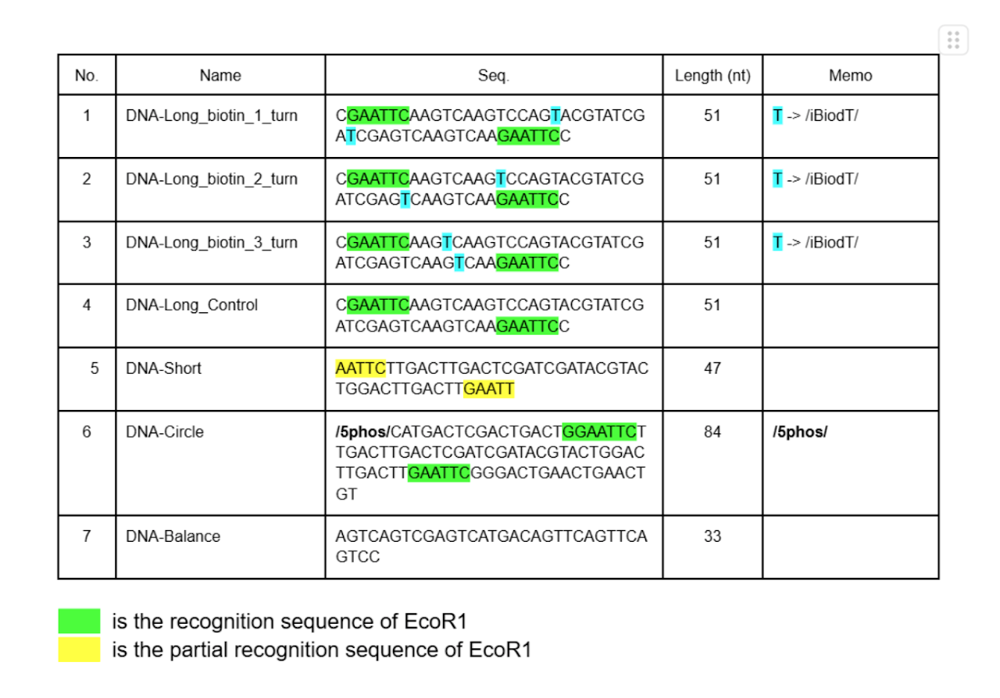
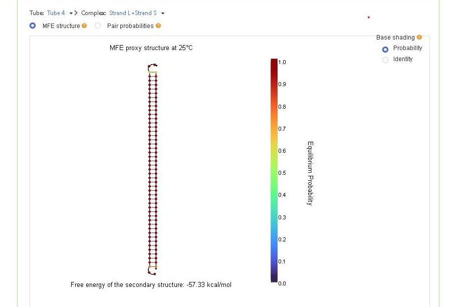
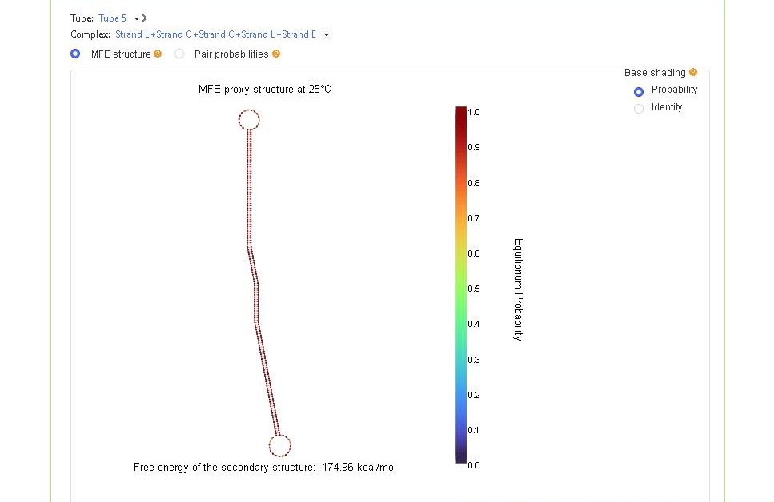

Material
We used DNA and biotin with the following structure in our experiments.
Table 1:DNA seaquence
Figure 1:The structure of Biotin dT from IDT

Figure 2:NUPACK simulation that shows the hybridization of DNA-Long-Control and DNA-Short
Figure 3:NUPACK simulation(circularized DNA for Experiment 3)
Figure 4:The structure of DNA in Figure3

Experiment-1: Mixing dsDNA and avidin at different ratios
In order to Determine the Optimal Avidin Concentration for the Formation of the Curved dsDNA-Avidin Complex,Electrophoresis was performed using a mixture of solutions with varying ratios of avidin- and biotin-modified dsDNA, and the distribution of bands was compared. Detailed experimental methods can be found in the appendix.
Experiment-2: Change the distance between biotin
In order to confirm whether changes in the biotin-to-biotin distance affect the curvature of dsDNA, dsDNA with biotin-to-biotin distances of 1turn, 2turns, and 3turns was reacted with avidin, and electrophoresis was performed. Detailed experimental methods can be found in the appendix.
Results and Discussion(Experiment₋1,2)
In Figures 5 to 8, we used a 10-bp DNA step ladder. In Figure 9, we used a 50-bp DNA ladder.